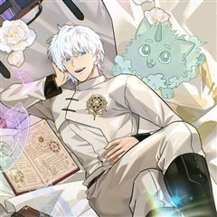

무한의 마법사 같은 웹툰 추천

무한의 마법사 · kiraz(REDICE STUDIO) / 아디티 / 김치우
무한의 마법사 재밌게 봤다면 이 웹툰들도 좋아할 거예요. 같은 장르이면서 미스터리, 학원물, 성장물 같은 요소가 겹치는 작품을, 겹치는 요소가 많은 순서로 20개 골랐어요.
2026-10-04 기준 · 네이버웹툰·카카오웹툰·레진코믹스 · 성인 작품 제외
내 취향으로 직접 골라 추천받기 →-
1
 카카오웹툰
카카오웹툰만렙 플레이어의 100번째 회귀
전세계적으로 15세부터 29세는 무조건 참가해야 하는 총 20라운드의 데스게임. 이 게임에 회귀특성으로 100번째 도전을 시작하게 된 주인공이 99번의 경험으로 얻은 정보를 이용해 남들보다 압도적으로 강해지는 사이다물. 마지막 라운드의 조건이 최소…
미스터리학원물성장물판타지카카오웹툰에서 보기 → · 만렙 플레이어의 100번째 회귀 같은 웹툰 → -
2
 카카오웹툰
카카오웹툰헌터 아카데미의 최강투신
최악이라 불리는 F급 특성. 5살의 신유성은 헌터 명가인 신오가문에서 버림받는다. 그리고 같은 해, 고아원에서 헌터들의 정점인 권왕을 만나 거두어 진다. 권왕은 특성이나 능력 아닌 ‘체술’로 정점에 오른 헌터. 그는 신유성의 특성이 아닌 체질에 주목…
미스터리학원물성장물판타지카카오웹툰에서 보기 → -
3
 카카오웹툰
카카오웹툰鬼신들린 그래플러
만년 찐따 지철민에게 어느 날 문득 귀신을 보는 능력이 생겼다. 그러나 이 능력이 들키면 귀신들이 따라다니기에 항상 모른 척했으나 어느 귀신에게 그 능력을 들키고 말았고 그 귀신은 지철을 따라다니기 시작한다. 그 귀신은 바로.. 주짓수 괴물..?!
미스터리학원물성장물판타지카카오웹툰에서 보기 → -
4
 카카오웹툰
카카오웹툰해골병사는 던전을 지키지 못했다
나는 ‘해골병사’. 주인인 서큐버스님을 용사로부터 지키지 못하고 그저 하찮게 부서져 버린 일개 몬스터. 그렇게 죽음을 맞이하는 줄 알았다. 그러나 정신을 차려보니, 20년 전 사령술사에 의해 눈을 뜬 그 날로 돌아왔다. ‘띠링!’ 남들에게는 보이지…
미스터리학원물판타지카카오웹툰에서 보기 → -
5카카오웹툰
환생한 암살자는 검술 천재
나의 전생은 목줄이 묶여진 개였다. 부모의 얼굴도 기억나지 않고, 그저 감정 없는 도구와 같이 살아온 삶. 그 삶의 끝은 주인에게 처참히 살해당하는 것. 그렇게 삶이 끝나는 줄 알았다. 하지만 눈을 다시 떴을 땐, 난 대륙 최강의 가문의 막내로 태어…
미스터리학원물판타지카카오웹툰에서 보기 → -
6
 카카오웹툰
카카오웹툰테이밍 마스터
전 세계에서 가장 인지도 높은 VR(가상현실) 게임 ‘카일란’. 가상현실학과에서도 유명한 자타공인의 게임 폐인 이안. 서버에서 순위권에 드는 궁수로서 남부러울 것 없는 그가 우연히 획득하게 된 히든 클래스로의 전직을 위해 주위의 반대를 무릅쓰고 93…
미스터리학원물판타지카카오웹툰에서 보기 → -
7
 카카오웹툰
카카오웹툰문 뒤에 지옥이 있다
'문'을 열 때마다 문 뒤의 공간이 무작위로 뒤섞이는 세상. 그곳에서 살아남은 학생들. 가족들의 곁으로 돌아가기 위해, 집으로 돌아가기 위해선 저 '문'을 열어야만 한다.
미스터리학원물판타지카카오웹툰에서 보기 → -
8
 카카오웹툰
카카오웹툰용사 파티 때려치웁니다
마왕을 무찌르고 세상을 구원하기 위해 모인 최강의 용사파티가 있었다. 하지만 마왕 토벌엔 관심이 없고 편한 전장만 찾는 용사 파티에 환멸을 느낀 잿빛 마법사 라니엘은, 결국 파티를 때려치우고 고향으로 돌아와 스승을 만난다. 그런 그에게 라니엘의 스승…
미스터리학원물판타지카카오웹툰에서 보기 → -
9

카카오웹툰성자는 개뿔, 현대의학의 힘이다
천재 의사로 의학계에 힘을 떨치던 유성. 수술실을 집처럼 여기던 그는 어느 날 교통사고로 죽게 되고. 정신을 차려보니 다른 세계로 떨어져 버렸다. 그런데 성녀... 성국... 힐링 마법이라고? "내가 얼마나 힘들게 의학을 배웠는데, 손만 대 놓고 치…
미스터리학원물판타지카카오웹툰에서 보기 → -
10카카오웹툰
영주님의 코인이 줄지 않음?!
암살자에게 비참한 죽음을 당하고, 과거로 회귀한 에른. 그런데 그의 눈에 차원거래서가 깃들어 있었다! [거래가 완료되었습니다.] [보유 포인트 : ?????P] 모든 기억을 가지고 회귀한 에른, 중고로운 차원나라... 아니 평화로운 차원나라에 폭풍이…
미스터리학원물판타지카카오웹툰에서 보기 → -
11
 카카오웹툰
카카오웹툰모르는 만화에 빙의했다
‘스크램블 러브’, 1,000만 부를 넘긴 일본의 대히트 러브코미디 만화. 한 번도 본 적 없는 그 만화에 비중 없는 엑스트라 김유성으로 빙의했다. 그런데 이 녀석, 알고 보니 코스프레까지 하는 진성 오타쿠잖아? 의심받지 않는 편안한 인생을 위해서…
미스터리학원물판타지카카오웹툰에서 보기 → -
12
 카카오웹툰
카카오웹툰신인인데 천만배우
계부 밑에서 어렵게 유년시절을 보낸 무영. 그에겐 삶이 지옥과도 같았다. 살아 있는 지옥에서 살 길을 알려준, 신비스러운 한 목소리. “네 인생 대신 다른 누군가의 인생을 살아." 그렇게 시작한 연기였는데…… 생존 본능과도 같은 것이었을까. 잘해도,…
미스터리성장물판타지카카오웹툰에서 보기 → -
13
 카카오웹툰
카카오웹툰미친 세계의 엑스트라
“이 거지 같은 세계에 버려지다니!” 무려 800화 이상 연재되며 독자들에게 욕을 푸짐히도 들어먹은 ‘칠색 세계의 연대기’. 온갖 막장 요소와 끝도 없이 강해지는 몬스터, 툭하면 주인공을 죽이려 하는 히로인들이 판치는 미친 세계. ‘근데 이딴 세계에…
미스터리학원물판타지카카오웹툰에서 보기 → -
14
 카카오웹툰
카카오웹툰블랙 베히모스
태초에 세 명의 신이 있었다. 땅의 베히모스, 바다의 레비야탄, 하늘의 즈가. 그러나 베히모스와 레비야탄은 서로를 증오하였고 사투 끝에 둘다 죽게 된다. 이를 지켜본 즈가가 눈물을 흘렸고, 그 눈물이 탈리스라는 신비한 힘을 가진 광석이 공존하는 세상…
학원물성장물판타지카카오웹툰에서 보기 → · 블랙 베히모스 같은 웹툰 → -
15
 카카오웹툰
카카오웹툰소설 속 엑스트라
"나는 누구지?" 이 세상은 내가 쓴 소설. 그러나 나는 단 한 번도 쓴 적 없는 인물이 되었다. 얼굴은 물음표에다, 소설 속 그 누구와도 접점이 없는, 아무도 기억 못할 그런 인물. 영웅 아카데미에 입학한 엑스트라, 아니 소설 속 먼지가 살아남는…
학원물성장물판타지카카오웹툰에서 보기 → · 소설 속 엑스트라 같은 웹툰 → -
16
 카카오웹툰
카카오웹툰권왕전생
인간들이 이종족을 노예로 부리는 세상. 대마도사 '레펜하르트'는 이종족들을 돕는다는 이유로 인간들에게 마왕 취급을 받는다. 마왕을 토벌하기 위해 온 용사 일행! '레펜하르트'는 그에 맞서 용사 일행에게 큰 피해를 주는 것에 성공하지만, 결국 권왕 '…
학원물성장물판타지카카오웹툰에서 보기 → -
17
 카카오웹툰
카카오웹툰네크로맨서 학교의 소환천재
네크로맨서 진영과 프리스트 진영의 '100년 전쟁' 이후. 힘의 구도를 뒤바꿀 역대급 인재가 태어났다. 무엇을 상상하던 그 이상의 잠재력. 아버지의 언데드 군단을 손에 넣고, 대륙을 양분하는 위대한 네크로맨서 학교 '키젠'에 입학한다. 엘리트들 사이…
학원물성장물판타지카카오웹툰에서 보기 → -
18
 네이버웹툰
네이버웹툰달로 만든 아이
어린 시절부터 남들이 보지 못하는 존재들을 볼 수 있던 '박하'. 평생을 외롭게 살아온 박하는 18살이 되던 해, 처음으로 자신과 같은 것을 볼 수 있는 '진도'와 그의 친구들을 만나게 된다. 어느 날, 진도를 통해 박하가 과거에 영물들을 군림했던…
학원물성장물판타지네이버웹툰에서 보기 → -
19
 카카오웹툰
카카오웹툰99대장
호랑이의 심장을 가지고 태어난 주인공 나선욱은 사고뭉치였으나 부모님의 소원으로 자신의 강함을 숨기고 오로지 졸업을 목표로 외진 곳에 위치한 조용할 줄 알았던 학교 “국양고등학교”로 전학을 가게 된다. 그러나 그곳은 다양한 꼰대 문화와 위험한 인물들이…
학원물성장물판타지카카오웹툰에서 보기 → -
20
 카카오웹툰
카카오웹툰뱀파이어 로드로 사는 법
반년간의 도주 생활 끝에 결국 성기사의 명성을 위한 제물로 살해당한 뱀파이어 유진. 후회 속에서 삶을 마감한 그에게 회귀라는 기회가 찾아왔다. “절대로 또 그렇게 죽진 않을 거다. 정말 과거로 돌아온 거라면, 무슨 수를 써서라도……. 두 번 다시 후…
학원물성장물판타지카카오웹툰에서 보기 →